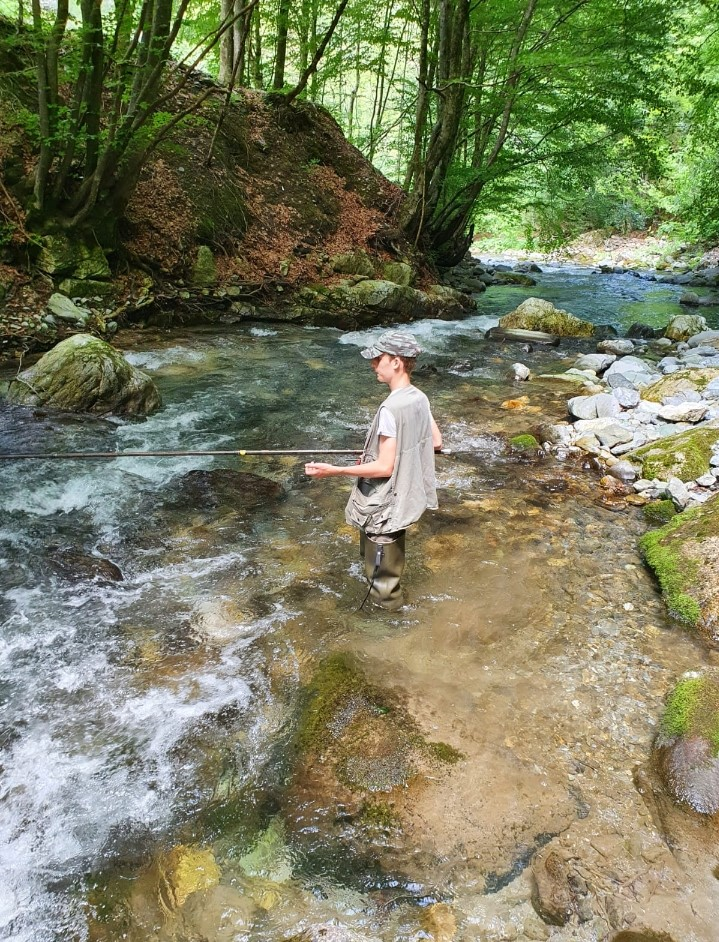

Hobbies

.jpg)
- Sicuramente il mio hobbie principale è il tennis, che pratico a livello agonistico ormai da 11 anni.
Io amo questa disciplina soprattutto perchè essendo uno sport individuale tutti i meriti e tutte le colpe ricadono sul giocatore.
Infatti non mi è mai piaciuto praticare sport di squadra in quanto la vittoria e la sconfitta dipende molto anche dai compagni.
- Un altro dei miei hobbie principali è andare in montagna dove partico il trail running; la fatica di questo sport
è immensa, ma la sensazione che si prova raggiunta la meta è magnifica.
Inoltre mi piace molto praticare la pesca alla trota
con mio padre nei fiumi o nei torrenti di montagna e alcune volte ci si imbatte in paesaggi spettacolari.
Questo sport è molto particolare e alcune volte può capitare di tornare a casa a mani vuote invece altre di tornare a casa
con le tasche pienissime.
Come probabilmente si è capito, preferisco la montagna al mare, ma anche quest'ultimo non mi dispiace
soprattutto perchè la movida che è presente nelle località marittime non c'è nelle località montane.
- Inoltre, se si può considerare un hobbie, come ho già detto nell'altra sezione mi piace molto uscire con i miei amici
oppure giocare alla play con loro.